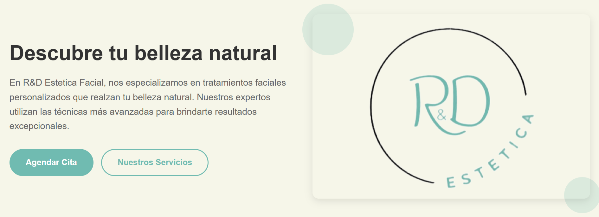
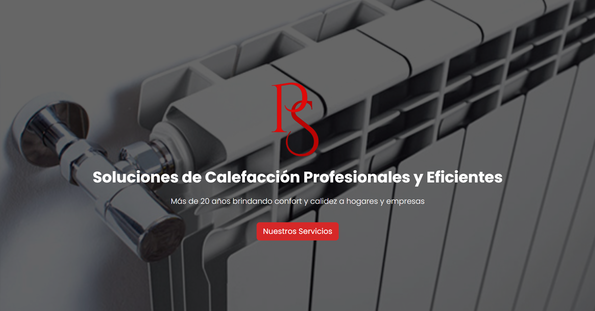

Hola, somos Sacks Verse
Cada pagina es un universo
Nuestros Servicios
Desarrollo Frontend
Interfaces modernas y responsivas con las últimas tecnologías web.
Desarrollo Backend
Arquitecturas robustas y escalables para aplicaciones de alto rendimiento.
Diseño UX/UI
Experiencias de usuario inmersivas con interfaces intuitivas y atractivas.
Proyectos Destacados

R&D Estetica Facial
Página para gestionar clientes, calcular costos y mostrar información de contacto mediante una landing profesional integrada.
HTML
CSS
JS
Django
PostgreSQL
Digital Ocean
Ver detalles

PS Calefacción
Sitio para mostrar servicios, generar presupuestos, gestionar clientes y brindar contacto desde su página principal.
HTML
CSS
JS
Django
AWS
Ver detalles